Monitoreo y control
DWDM PRAT
- Anydesk COR (en puesto 2) ID 956683736 / clave: telsur2020
- Gestor prat escritorio remoto (172.19.12.202) / TELEDUCTOS\cor2020, pass: Passw0rd / Gestor TNMS / cor2/Part.2021
Infraestructura Escritorio remoto PowerManager2
172.19.32.5
MVCFIBERHOME\COR / cor2020
Escritorio remoto Cheroque 172.19.32.5 cor cor2020 administrator telsur
Harris 172.19.19.10 administrador telsur admin admin
Display transporte IP 172.19.5.11 Gtd.2021
DWDM Huawei
Red DWDM HuaweiOperadorCor / Gtd_2023_#cor
SERVICE BROKER
Configurar Putty
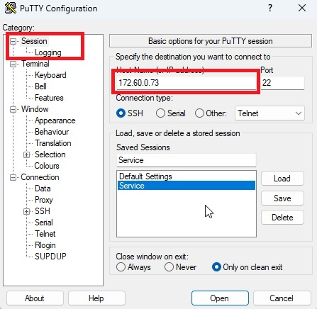 sesión ssh: 172.60.0.73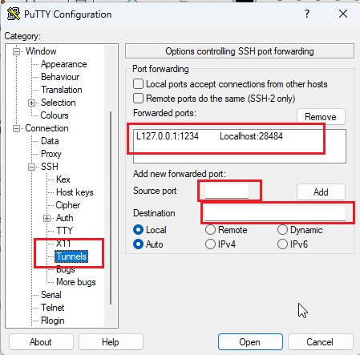 puerto: 127.0.0.1:1234 | destino: Localhost:28484
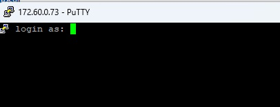 root/ Br^k3r14
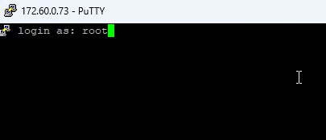 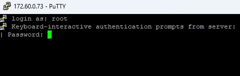 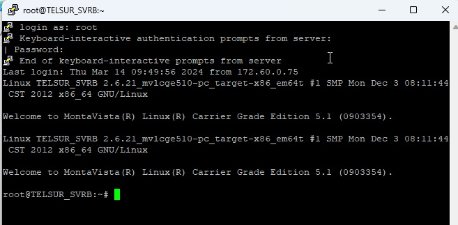 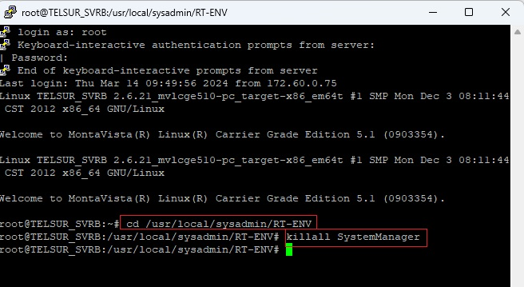
cd /usr/local/sysadmin/RT-ENV
killall SystemManager
Esperar 15 minutos y abrir el enlace web
http://127.0.0.1:1234/guest/(sin password)
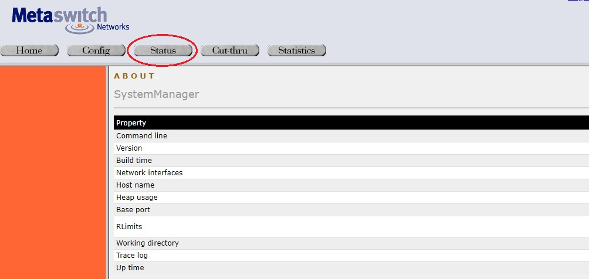 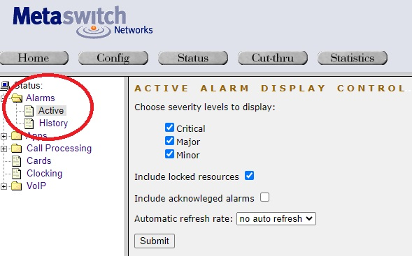 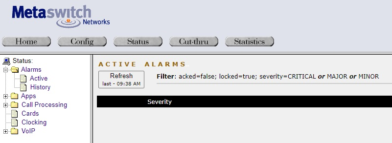
Si se registra alguna alarma, escalar a Especialista de Telefonía
Aplicativo EWSD RADMIN
Revisar un DLU
STATDLU:DLU=40;
dispalarm; < permite ver las alarmas de la central
STATDLUMOD:DLU=40,MOD=X-X;
CONFDLUMOD:DLU=40,MOD=1-11,OST=MBL; => con ese comando se baja el modulo
CONFDLUMOD:DLU=40,MOD=1-11,OST=ACT ; => con este se sube
CONFDLUMOD:DLU=40,OST=MBL/ACT => ese comando permite bajar la DLU, pero en ese caso es más complejo, porque hay que corroborar que aplique o no, sino se afectarían los servicios
Ingresar en comndo: OMT0 y ↲ enter
admin/123456
- CNCP - 172.19.5.117 => 83770334 => telsur2020 => cncp*2023*
- CSTR - 172.19.5.116 => 405981234 => telsur2023 => cstr*2023*
- CYHQ - 172.19.5.115 => 944183405 => telsur2020 => cyhq*2023*
- OSRN - 172.19.5.113 => 493979587 => Drag0n01 => osrn*2023*
- PMTT - 172.19.5.114 => 1930321137 => Telsur2020 => pmtt*2023*
- TMCO - 172.19.5.112 => 994030121 => Telsur2023 => tmco*2023*
- VLDV - 172.19.5.111 => 1632980048 => Telsur45 / pcama -Telsur45 => vldv*2023*
- VLDV - Escritorio Remoto => 172.16.67.173 => pcama -Telsur45
CHEQUEO MANUAL CADA 2 HORAS DE CENTRALES EWSD
STATSSP;
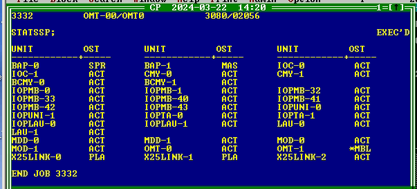STATCCG;
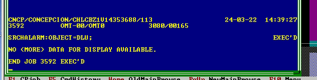SRCHALARM:OBJECT=DLU;
REVISION DE DLU
STATDLUMOD DLU=MOD=X-X;REINICIO DE DLU
CONFDLUDLUDLU0OST=CBL=>MBL=>PLA=>MBL=>ACTOTRO CASO CUANDO ESTAN FUERA LOS DOS LADOS
CONFDLUMODDLU=160MOD=1-8OST=CBL=>MBL=>PLA=>MBL=>ACTPUERTA DE LINEA 632290012
DISPSUB:LAC=063,DN=2290012Realizar el AMA
Limpiar páginas de centrales ESWD, esto se hace todas las mañanas:
DISPFILE:FILE=IA.ICAMA,ALL=YES; verificar que el IA.ICAMA fue liberado o no.> ver "copyarea
bytes=0"
DISPFILE:FILE=AMA.; EL VALOR DE LAS PAGINAS COPIADAS DEBE COINCIDIR CON EL IA.ICAMA RELCYCFILE:FILE=IA.ICAMA; liberar AMA
Registro
AMA
Proceso del AMA, esto se hace todas las tardes:
equipos/archivos/RESUMEN_AMA_mes_año sacar datos de la correlación por cada día y zona, para ordenarse. Ver que disco este liberado
DISPFILE:FILE=IA.ICAMA,ALL=YES; los 2 copyarea pages y bytes en 0
Ver disco montado en centrales
de no ser así se deberá montarDISPMO:MOD=0; nombre (AMADIA) y estado NORM=1
Revisar estado de los discos
STATSSP;MOD-0 y 1 en ACT
Revisar secuencia de los archivos
DISPFILE:FILE=AMA.; para ve si corresponde la numeración de orden del archivo de teams, debe ser el siguiente
Iniciaizacion de disco
INITMO
VSN=AMADIA
CD=EBC
MOD=0; Iniciar y que se ejecute el comando
Sacar el Ama
TRANSFILE:FILE=AMA.649.PMTT/IA.ICAMA,VSNR=AMADIA; saca el archivo AMA, comando debe ser aceptado. Se debe anotar el registro y hora del RECORDS.
TRANSFILE:FILE=AMA.649.PMTT,VSNS=AMADIA,MODE=CRD;comando debe ser aceptado, archivo AMA se paso al disco
En caso que el disco este montado en "otro"
CONFMOD:MOD=0,OST=MBL;
CONFMOD:MOD=0,OST=ACT;
INITMO
VSN=AMADIA
CD=EBC
MOD=0;
Aplicativos AMA
Escritorio Remoto:172.16.67.252 => userewsd / Passw0rd
- FLASH2 GUI:
- crear los respaldos -dejar online (presionar botón gris)
- crear los backup (presionar botón "create backup" y guardar con el archivo del día anterior cambiando solo el número de registro al actual)
- Arsenal Image mountaner
- escoger "mount image", aplicar "ver todos los archivos" y escoger uno por uno los archivos de los sitios.
- marcar 512, write original y removable
- WINDISKUS
- escoger cada sitio
- file groups, archivo AMA
- escoger y apretar file/copy/to pc y "yes all" Cambiar extensión de los archivos
- disco C/usuarios/userewsd
- dejarlos en "SRC"
- LNP: Acceder
- CDR/cargar archivos
- cargar directo los archivos, copiar del escritorio remoto al local
- ver traducidos y sacar datos del registro 84 y tasabilidad